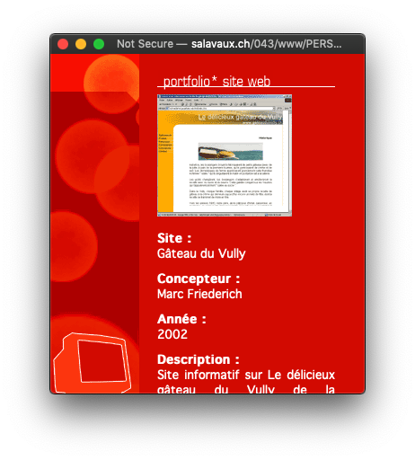
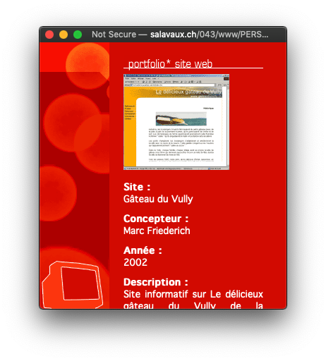

Simple is the web
and why I love it so much.
The web I love is :
#simple #accessible #resilient #fast #distributed #diverse #empowering #open #evolving #playfull
Act 1.
We love a simple web
First came the hyperlink
hyperlink is bi-directional
Proprietary vs Open
Act 2.
We love an accessible web
Accessibility in all ways
A11y – poor connexions – old computers – Disabled Javascript – Wget
Start with one file
Open knowledge
Forgiveness by default is absolutely required for the kind of large-scale, worldwide adoption that the web enjoys.
Jeff Atwood — JavaScript and HTML: Forgiveness by DefaultAct 3.
We love a resilient web
Still working for the past
"No problem mum, resilient web to the rescue!"
Another argument to the winning open web platform.
No
A rejected promise
A today's browser can display a 1996 website
A 1996 browser can display a today's webpage
<noscript>
Hello Mum, you'll get a new iPhone for christmas
</noscript>
<noscript>
You need javascript to access this content because we are to lazy to consider unobstructive javascript.
</noscript>
Unobstructive Javascript
<html class="no-js">
document.documentElement.className.replace("no-js","js");
Act 4.
We all love a fast web
Today's solutions are tomorrow's problems
Eventually data is already here localy
Act 5.
We all love a distributed web
We lost ground in the distributed web
Amazon admits that a typo took the internet down this week
Engadget 2017-03-02Act 6.
We love a diverse web
For perspective, by the end of 1992 there were seven web browsers which allowed users to surf the vast ocean of what was at the time only 22 known Websites.
Brian Kardell – A Brief(ish) History of the Web Universe - Part III: The Early WebGet away from monopoly
IndieWeb movement
1999: there are millions of websites all hyperlinked together
2019: there are four websites, each filled with screenshots of the other three.
Act 7.
We love an empowering web

 

It's a perspective question
Act 8.
We love an open web
For a while, before a third of the planet had signed up for Facebook, RSS was simply how many people stayed abreast of news on the internet.
Aaron Swartz – The Rise and Demise of RSSAct 9.
We love an evolving web
Without reloading the page
Act 10.
We love a playfull web

A javascript library to round corners

Enthousiasm drives us
We shape the web
#simple #accessible #resilient #fast #distributed #diverse #empowering #open #evolving #playfull
Merci !
Slides available forever here
https://zufrieden.github.io/slides-easy-as-web/©
| Présentation | reveal.js |
| Typography | Noto Sans Regular Noto Sans Bold Noto Mono |
| Emojis | emojione.com |
Questions/Réponses

Maintenant ou plus tard ... @zufrieden